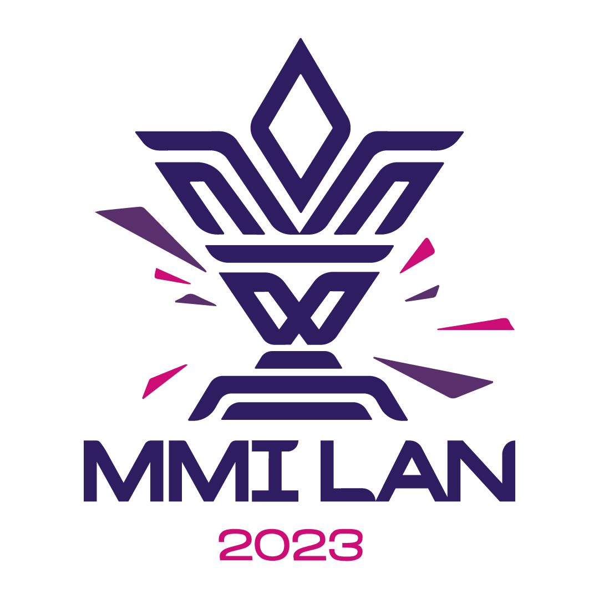
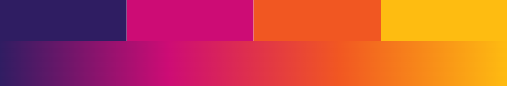
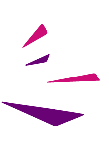
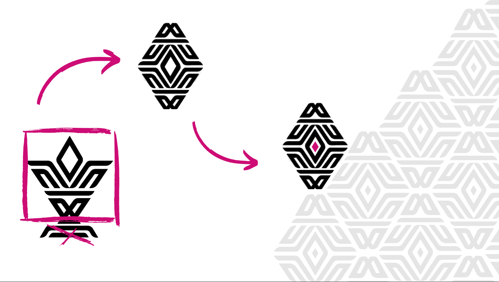
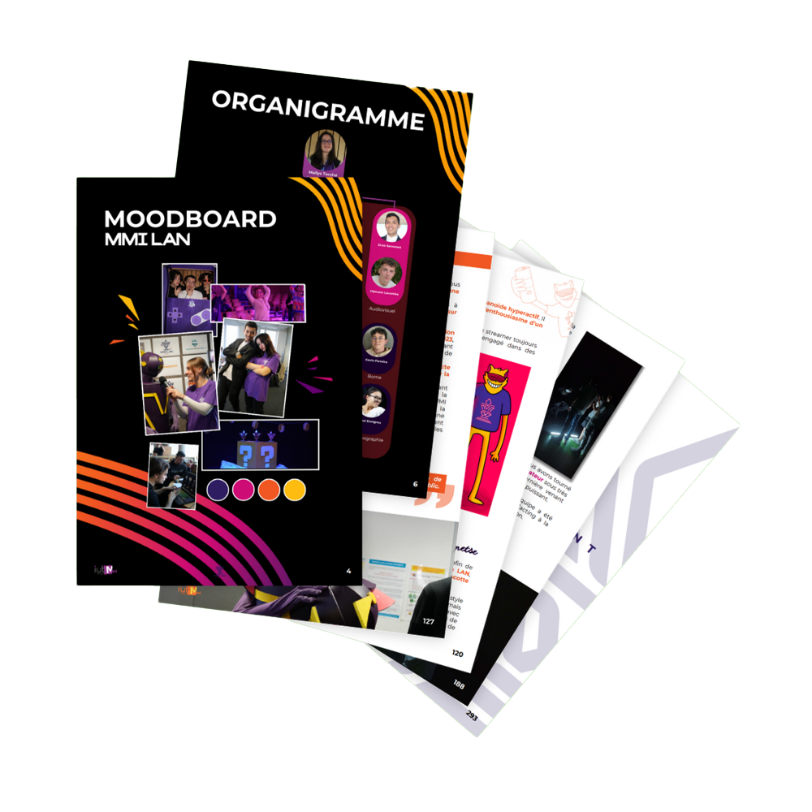
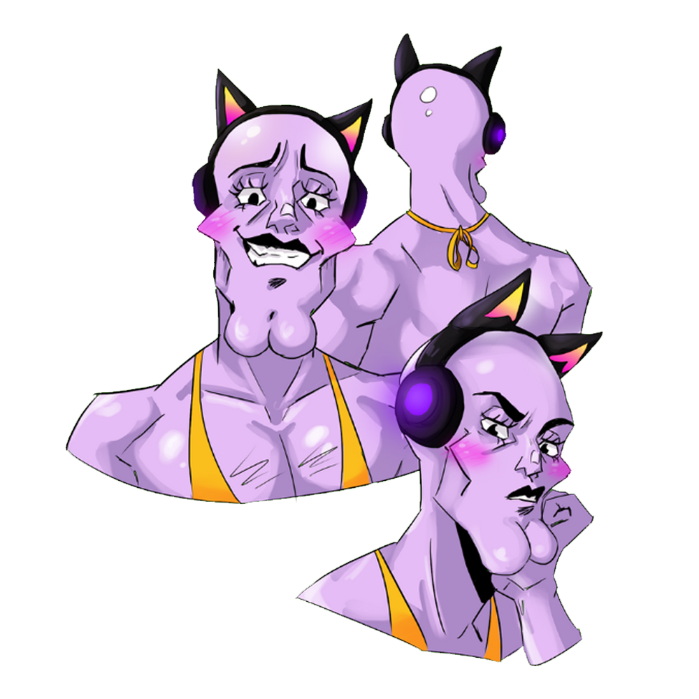
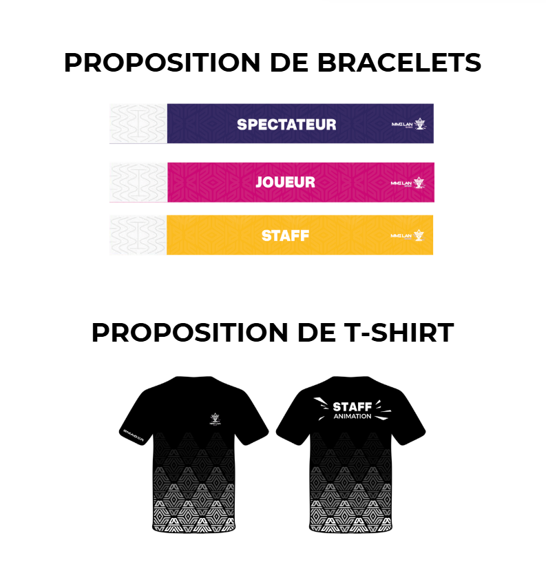
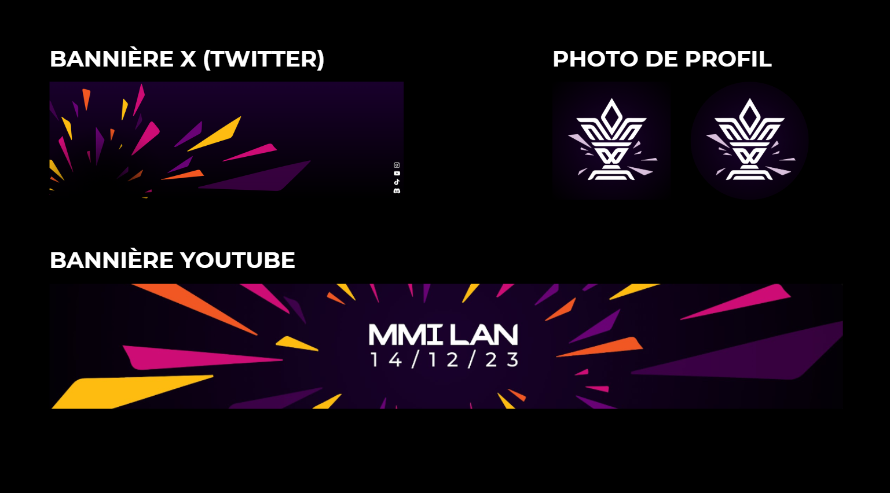
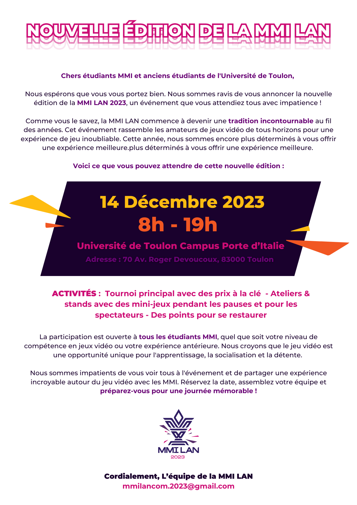

MMI LAN 2023
objectif
Réaliser en 4 mois la MMI LAN 2023 de A à Z, une expérience gaming en réseau local d'une journée, avec la promotion MMI2.
En chiffres
10
référents de projet
94
étudiants à manager
4
mois de projet
Résultats
1
évènement réussi
+4000
personnes touchées par notre communication
39
joueurs ravis de participer
Gestion de projet
✦ Rôle principal ✦
Cheffe de projet de 60 étudiants
Nous avons encadré avec cinq autres référents tous les étudiants du parcours création numérique.
Notre rôle consistait à organiser le travail en équipe grâce à des directives claires. J'ai pu fixer des délais précis et assurer un suivi régulier de l'avancée des productions de mes équipes (notamment la charte graphique, mascotte, mais aussi print et goodies, tout en passant même par un peu de réseaux sociaux). Pour ça, nous avions mis en place des messages d'annonce fréquents et des sondages.
Nous avons facilité la circulation des informations entre les pôles (communication, développement, audiovisuel), notamment en relayant les besoins techniques et logistiques pour notre pôle.
J'ai été présente dans les réunions inter-pôles pour faire entendre avec les autres référents la voix du pôle création, afin de proposer des solutions concrètes et faire avancer le projet dans le respect équitable des demandes de tous.
L'objectif global était de maintenir une organisation stable et équilibrée dans le travail avec une vraie transparence dans les décisions collectives.
Jour J : staff coordination
Le jour J, j'ai assuré la coordination entre le pôle développement et les joueurs pour garantir le bon déroulement de l'événement. En cas de décision importante, je me concertais directement avec le décisionnaire du pôle développement afin d'agir rapidement et de manière efficace.
En parallèle, j'ai pris l'initiative de gérer la communication improvisée des horaires, ajustements et soucis techniques en direct sur le serveur Discord d'accueil des joueurs.
✦ Rôle principal ✦
Direction Artistique
Préambule
Que serait un événement sans identité visuelle ? Pour la MMI LAN 2023, cette question a été notre point de départ.
Une identité forte, reconnaissable, cohérente : c'est ce que nous avons cherché à construire tout au long de la conception de la charte graphique. En tant que référente de projet parcours création, j'ai co-dirigé la direction artistique, en menant chaque étape de création avec précision et vision.
Une base solide : le logo
Tout a commencé avec le choix du logo. Celui-ci a été voté par l'ensemble de la promotion, et s'est naturellement imposé tant il se démarquait par sa lisibilité et son impact graphique. C'était une base idéale pour construire la suite de notre univers visuel.
 Recherche et sélection des couleurs
Avec notre équipe, nous avons proposé et comparé plusieurs palettes. Chaque couleur a été réfléchie : garder le violet en lien direct avec l'identité MMI, et trouver un équilibre entre modernité et énergie sans reprendre les couleurs des années précédentes. Après étude, nous avons soumis les meilleures propositions à un vote.
Construction des éléments visuels
À partir de ces choix, nous avons défini les éléments visuels forts de l'événement. Mockups, déclinaisons, déclinaisons typographiques... chaque aspect a été pensé pour s'adapter à tous les supports, tout en gardant une direction claire et identifiable. L'équipe nous a apporté une aide ponctuelle, principalement sur les visuels types et les mockups.
J'ai personnellement pris l'initiative de créer un pattern pour notre identité visuelle en me basant sur le logo.
Mise en page finale & design system
La mise en page intégrale de la charte a été réalisée à deux sur Canva. Pour fluidifier le travail d'équipe, nous nous sommes rapidement mises d'accord sur design system directement dans le document : titres, sous-titres et styles typographiques étaient préformatés avec des instructions claires, permettant à chacune de contribuer en gardant la cohérence visuelle.
Créations graphiques annexes
Mise en page du rapport d'évènement (300 pages)
Avec l'aide de moins de 10 étudiants, nous avons entièrement mis en page ce document. J'avais au préalable préparé un design system complet sur Canva pour que chacun puisse copier-coller facilement les élements en gardant la cohérence visuelle que nous avions défini.
Voir le documentProposition de Mascotte
En binôme, nous avons crée une mascotte pas comme les autres. Incarnant le charisme et le cringe, tout en en gardant sa couleur mauve pour l'esprit MMI, "MMI CHAD" est né.
Pour l'occasion, on lui a même créé un instagram !
Proposition de goodies
Pour le pôle comm'
J'ai aussi pu aider lors de la gestion du compte Instagram et la réalisation de certains posts.
Notre InstagramIl faudra scroller un peu...
Emailing
Et plus encore !
Logiciels utilisés

Discord

Illustrator

Photoshop

Procreate

Canva
✦ J'ai été dévouée dans ce projet, et si je devais réorganiser une LAN, je sais que j'en serais capable. ✦
Ce que j'ai appris
La première fois qu'on gère une équipe, ce n'est pas évident, mais c'est possible !
Chacun a sa propre manière de comprendre la communication interne et ses préférences en matière de management,
ce qui a parfois rendu la tâche complexe pour nous, référents de projets.
Trouver le bon équilibre entre être clairs sans paraître trop ferme, tout en restant accessibles et efficaces, n'a pas toujours été simple.
Au final, ce fut une expérience d'apprentissage enrichissante :
nous avons pu organiser un évènement réussi et qualitatif, dans un temps imparti, tous ensemble.